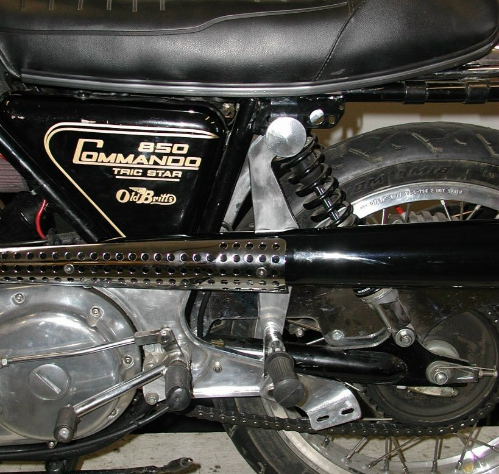
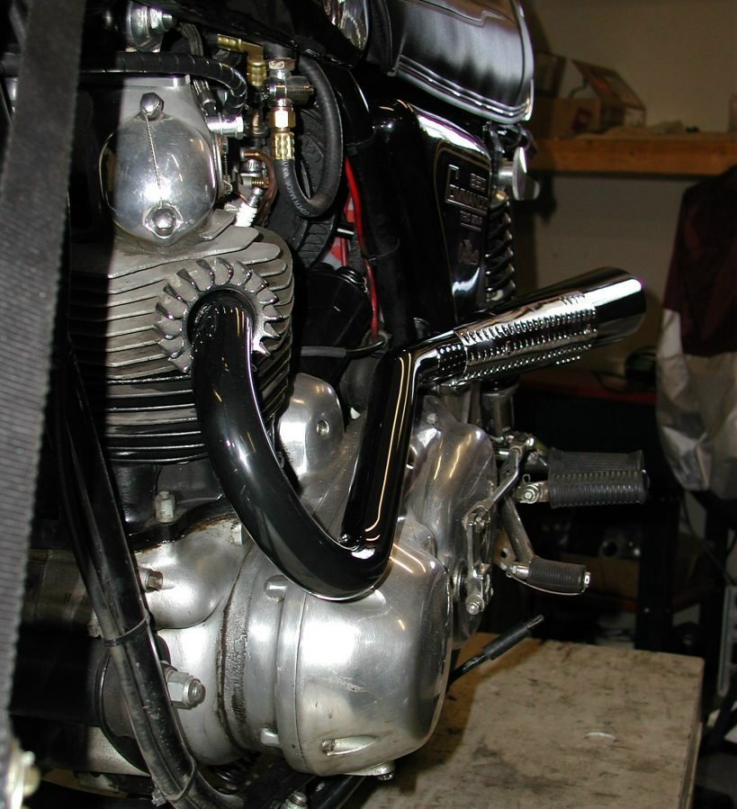
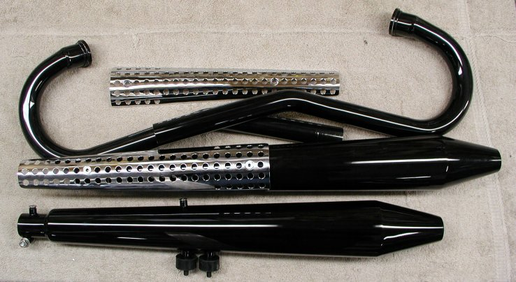
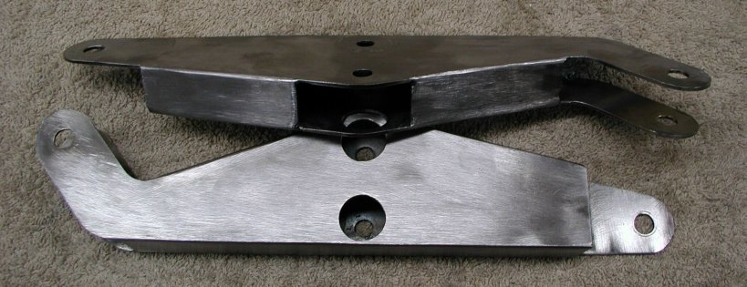

The "SS" exhaust system pictured in here is the black chrome exhaust, however shinny chrome is also available. Please ignore the aluminum bracket below the passenger foot peg, it was not removed for this set of pictures and is for another type of exhaust system.

The mufflers mount to the bike by having two rubber mounts (06-0622) screwed into the muffler and then bolted to the mounting bracket. One threaded end of the rubber mount needs to be shortened by around four threads, so the rubber mount will screw completely into the muffler.

The heat shields also screw into the mufflers. Each muffler has two lugs that a 1/4" bolt threads through and when tightened, secures the muffler to the pipes, eliminating the need for muffler clamps. The stainless 1/4" bolt, washers and nut are included with each muffler.

In this picture you can see the rubber mounts screwed into the bottom muffler and how the heat shield mounts to the muffler.

This is one set of mounting brackets. The brackets bolt on each side of the top shock mount, using the stock shock mounting bolt and on the back side of the passenger foot peg mount, again using the stock foot peg mounting bolt. This bracket was designed around the MK3 passenger peg brackets (06-4149), so if you have a MK3 you will need two more of these peg brackets and if you do not have a MK3 you will need four of the peg brackets (06-4149).
It is sort of a pain to get the mufflers secured to the mounting brackets due to the box design of the brackets and the limited space available for a bracket. There are two access holes on the back side of the brackets so you can get a socket into the bracket and tighten up the two nuts that thread on to the rubber mounts. We recommend using one stainless washer (52-330301) and one stainless lock nut (06-7892/SS) for each rubber mount.
These mounting brackets come un-finished and the finish should be adequate for painting or powder coating. If you are going to chrome these brackets, you probably would want to polish them for a smother finish.
Mounting Procedure:
- Loosely fit the pipes only to the engine, using one squash washer (06-3253) for each pipe. You can use either the 750 or the 850 finned exhaust nuts to secure the pipes. Again, do not tighten up the pipes, just snug them up to hold them in place.
- Remove the top shock bolt, leaving the shock in place.
- Mount the two passenger peg brackets (06-4149) to the "Z" bracket.
- Loosely mount rubber mounts to the mounting brackets, making sure the longer thread is inserted into the bracket, leaving the shorter thread facing out. Tighten up the lock nuts on the rubber mount until they are snug and then back off just a bit so the rubber mounts will turn on the bracket. This is so you can screw the rubber mounts into the mufflers easily when they are in place and only have a couple of turns on the lock nuts to secure the mufflers.
- Mount the brackets to the bike and tighten up the mounting bolts. The short side with the two large holes face into the bike. The brackets are handed and can only fit properly on the correct side.
- Make sure the 1/4" clamping bolt is removed from the muffler if it is attached. Carefully insert the end of the muffler over the exhaust pipe and line up the rubber mounting studs with the rubber mounts. Screw the rubber mounts into the muffler and tighten. You can carefully use pliers to tighten the rubber mounts firmly to the mufflers.
- Using a 5/16" socket through the back of the mounting brackets tighten up the lock nuts.
- Place the 1/4" clamping bolt on the muffler and tighten.
- Tighten up the exhaust nut on the head and after a couple of heat cycles, secure the exhaust nuts. See Tightening the Exhaust nuts on a Norton Commando for information on securing the exhaust nuts.
Prices for the items listed in this article:
- "SS" Exhaust Pipe Set, Chrome, Pipes Only, 1 3/8", Viking (part # 16-100007), $0.00.
- "SS" Exhaust Pipe Set, Black Chrome, Pipes Only, 1 3/8", Viking (part # 16-100007/BC), $410.00.
- "SS" Peashooter, Chrome, 1 3/8", Viking (part # 16-100007/M), $280.00 each.
- "SS" Peashooter, Black Chrome, 1 3/8", Viking (part # 16-100007/MBC), $446.00 each.
- "SS" Heat Shields Set, Chrome, Viking (part # 16-100007/HS), $91.00.
- "SS" Mounting Brackets Set, Un-finished (part # 16-100007/B), $225.00.
- NORTON, Bracket, Passenger Peg, MK3 (part # 06-4149), $11.00 each.
- NORTON, Mounting Rubber, Engine Steady & Muffler (part # 06-0622), $3.10 each.
- Hex Nut, 5/16 x 24, Lock, Stainless (part # 06-7892/SS), $0.68 each.
- Flat Washer, 5/16, Stainless (part # 52-330301), $0.20 each.
- NORTON, Gasket (Squash Washer), Exhaust Pipe (part # 06-3253), $0.95 each.
Norton Parts… Other Manufacture's Exhaust Components
This page was written and designed by F. H. Eaton
& Associates if you have any questions or comments please
contact us at infon@fheaton.com